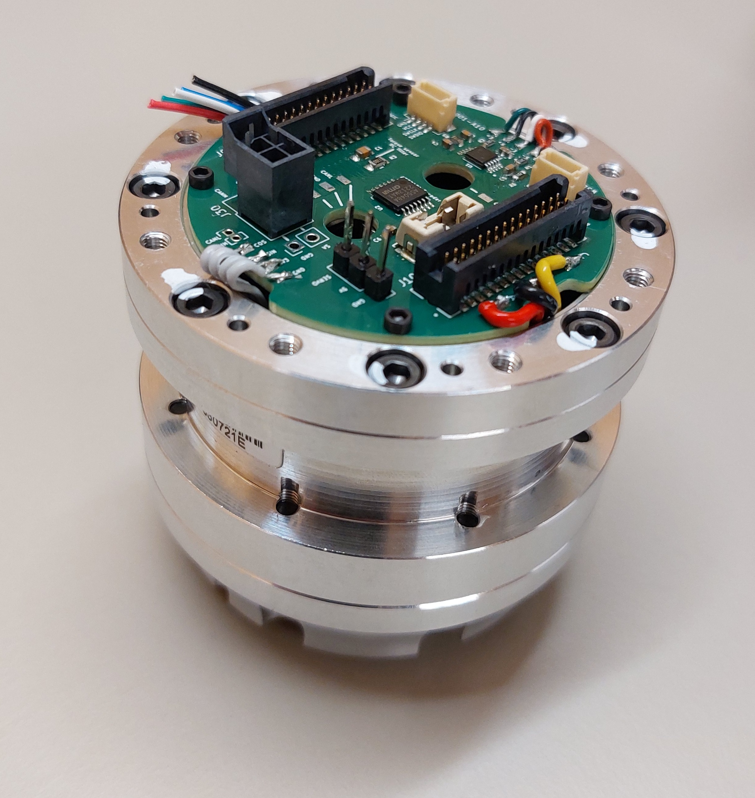

Flash the VESC
Getting Started
Plug the VESC board
To plug in the VESC board, you need an actuator with a carrier board.
{kind=link}
Take your VESC board and press it onto the carrier board, ensuring that the three MOSFETs face the three phases.
photo du bon placement
Press the board down until you hear a click. Ensure both sides are firmly seated.
photo de la carte bien enfoncé
Unplug the VESC board
Use a small screwdriver to pry open the four notches on the connectors.
photo de l’action
Upload Firmware
Take your actuator with the VESC board, connect the power supply, and link it to a computer using a USB cable.
Open VESC tool and connect to your actuator (see: Connect using USB).
In the left menu, go to Firmware, Then select the Custom File tab.
On the first row, click on Choose file... , select the file src/vesc_bldc/build/a50s_v23c_8s/a50s_v23c_8s.hex.
At the bottom of the tab, click on Update firmaware on the connected VESC , a window will appear, click on Yes.
Wait for the Firmware to upload.
Warning
Do not unplug the actuator while uploading the firmware!
When the upload is done, a window will appear, click on OK
Wait a moment before reconnecting to the actuator. You are done!
Load a base motor configuration
Click on File in the top-left corner of the window, select Load motor configuration XML. Choose the appropriate file, OR17S_BASE_120.xml or OR17S_BASE_80.xml, based on your actuator’s reduction.
Once the file is loaded, click on Write motor configuration on the right side of the window. A pop-up will appear, click on OK
Sin Cos calibration
In the left menu, go to LispBM Scripting. Then click on Open file... at the bottom of the main tab. Open src/VESC_scripts_config/scripts/SINCOS_Calib/00-Full identification.lisp and click on Stream at the top of the window.
Warning
The actuator will move during calibration, so ensure it is safe to proceed.
When the calibration is complete the actuator will make a sound. In the Console/REPL tab, verify that you see the message Module mean check ok, settings values.
Once calibration is done, click on Read motor configuration on the right side of the window to update the values.
Encoder detection
In the Motor Settings menu on the left, click on General. In the General tab, ensure that the Motor Type is set to FOC.
Next, go to the FOC menu on the left and click on the Encoder tab. At the bottom of the screen under Detect Encoder, change I from 10.00A to 3.00A.
Click on the play button to start the detection.
Warning
The actuator will move during calibration, so ensure it is safe to proceed.
Wait for the Offset and Ratio values to update, this indicate that the detection is complete. Once finished, click on the Apply button , then on Write motor configuration on the right side of the window to save the change.